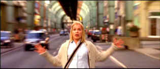

| Princess and the Warrior (SE)/ B+, B- |
| Columbia/2000/133/ANA 2.35 |
There's a moment when you think this might be a re-run
of Tykwer's earliest success, Run, Lola, Run when Bodo takes to the
streets on a fateful run,. You can feel the beat. The rush is on. But the
traffic flow veers off into other directions. Stylistically, Tykwer
delivers another fascinating and satisfying visual story-telling
tour-de-force.
You have to acclimate to the script movement.
It's like clouds forming in the sky to build a weather front. At first the
can be a bit confusing, but go with it and the Tykwer puzzle pieces will
become more apparent as the characters move to fateful rhythms.
 |
|
Hyper-memory. ©Columbia |
Tykwer is fascinated by the fates. His script
is laden with that may seem like coincidental incidents, but they are
governed by some sort of spiritual order and not simple accidents of
moment. Fate is at the heart of The Princess and the Warrior:
it brings Sissi and Bodo together. Bodo meets Sissi at the most
important moment. It brings Sissi to the wrong place at the right time.
All Tykwer's elements interlock with the precision of a finely tuned
instrument.
A powerfully romantic strain runs through The
Princess and the Warrior. The characters have a history behind them.
They
are damaged goods, but even when they step across the line of right, you
can't help staying on their side. There are a lot of very tough scenes to
watch, but that's part of the transfixing power. The bridging from scene
to scene is brilliant. All the cuts make sense and elevate the varied
elements of the film. You never know what some of these characters have
inside them. Sissi's determination is remarkable. Tykwer does not take you
in expected directions. Just when you think something will pan out
predictably, Tykwer turns it skillfully adhering to the internal logic of
the script. The truck sequence is a fantastically layered script
element.
The cast all vie for screen attention. They are a
fascinating mix. From Franka Potente's laid-back, almost zombie-like performance
as Sissi to Benno Fürmann's tortured off-center Bodo to Joachim Król's
intense Walter, the leads sing Tykwer's song in perfect harmony.
Supporting players are equally adept at making The Princess and the
Warrior come to life.
Visually stirring images are delivered without
interrupting the story-telling power. Tykwer's score captures the mysterious and almost
fairy tale like feel. The foreboding builds effectively. The Princess
and the Warrior is a first-rate production. Tykwer's direction is crisp,
efficient, and his overall command of the medium is bracing.
A fine looking DVD, The Princess and the
Warrior is a pleasure to watch. Saturation is consistently excellent. There's a
somewhat blown-out high-contrast look to the DVD which I think stems from
artistic intent. Details are mostly strong with good depth, however, there
are a few soft scenes. This one looks like it been considerably
edge-enhanced. Picture grain appears elevated above normal and some small
details jitter unreasonably. Check out the nasty movement of those corrugated
doors. Removable yellow English subtitles are easy to read.
Very nice Dolby Digital 5:1 surround stage. The music has wonderful depth.
It sounds like it is emanating form behind the image.
A richly detailed special edition features two
separate audio commentaries. Track one features a solo Tom Tykwer filling
in the details of The Princess and the Warrior while track one again
features Tykwer joined by stars Franka Potente and Benno Fürmann.
The German title translates to The Warrior and the Empress. Tykwer
preferred the sound of The Princess and the Warrior for the English title,
as he explains on the audio commentary (In English) with stars Franka
Potente and Benno Fürmann. There's also an excellent 30 plus minute
making of documentary in German with English subtitles. Five deleted
scenes with a hefty introduction from Tykwer and editor Mathilde Bonnefoy
complete the heart of the package. The introduction provides excellent
insights into the editing process and the commentary over the scenes
additional enlightenment.

 Gary Morris's insightful publication
Bright Lights Film Journal turns the celluloid in films from a unique
perspective. Click on the image above for more pure movie views.
Gary Morris's insightful publication
Bright Lights Film Journal turns the celluloid in films from a unique
perspective. Click on the image above for more pure movie views.

Images is a non-commercial Web site created for everyone who enjoys movies
and popular culture. Images is published quarterly; however, new reviews
will appear each week, so check back often.
Werner Herzog Film
![[ Werner Herzog ]](../images/werner-herzog.jpg)
The Web site of director Werner Herzog includes lots of great material. A
perfect stop for anyone who admires his films.
 Have you visited
Home Theater
Talk lately? One of the friendliest places on the Net for Home
Theater and DVD discussion, you can get help for installation problems or
simply share your opinions with other Vidiots.
Have you visited
Home Theater
Talk lately? One of the friendliest places on the Net for Home
Theater and DVD discussion, you can get help for installation problems or
simply share your opinions with other Vidiots.

The Movie Poster Archive includes extensive poster images from the films of stars like Susan Hayward, Kirk Douglas, Katharine Hepburn and many more. Our featured star is Humphrey Bogart.

To Kill a Mockingbird (SE)/ A,A

From the great novel by Harper Lee, this tale of growing up in
the 1930s South is splendidly evocative of place and period. Gregory Peck
is splendid. Direction impeccable.
General, The /A,B+

Irish gang leader Martin Cahill through the lens of John Boorman makes
fascinating viewing. Watch it in black and white, Boorman's choice.